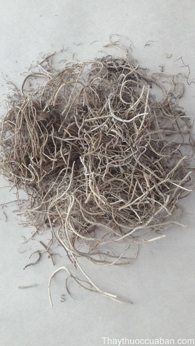
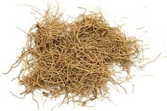

Tên khác:
Tiểu tân , Tế thảo , Thiểu tân , Độc diệp thảo, Kim bồn thảo...
Tên khoa học: Asarum sieboldii
Thuộc họ: Mộc hương Aristolochiaceae.
Tên tiếng trung: 细辛 (tế tân)
Cây tế tân:
( Mô tả, hình ảnh, thu hái, chế biến, thành phần hoá học, tác dụng dược lý ....)

Mô tả:
Rễ mảnh dẻ, mọc gần nhau ở các mấu, dài 10 – 20 cm, đường kính 1 mm; mặt ngoài màu vàng xám, nhẵn, có vết nhăn dọc, với những rễ con nhỏ hoặc vết sẹo. Có 2 – 3 lá mọc ở gốc thân khí sinh, cuống dài, mặt nhẵn, phiến lá phần nhiều bị gẫy, lá nguyên hình tim hay hình thận, mép nguyên, đầu lá nhọn, gốc lá hình tim, dài 4 – 10 cm, mặt trên màu lục nhạt. hoa, phần nhiều nhăn dúm lại, hình chuông, màu tía thẫm, thuỳ của bao hoa cong về phía gốc, phần nhiều bị nén ép, xát vào ống bao hoa. Quả nang, hình cầu. Mùi thơm, vị cay, nếm có cảm giác tê lưỡi.
Tế tân nói chung ưa thích các khu vực ẩm ướt và nhiều bóng râm và đất giàu mùn Các lá hình tim, sớm rụng, mọc đối, và mọc ra từ thân rễ nằm ngay dưới mặt đất. Mỗi năm hai lá mọc ra từ các đầu chồi tăng trưởng. Các Hoa Kỳ dị hình cái ấm, cho nên trong tiếng Anh người ta còn gọi chúng là little jug (ấm con), xuất hiện vào mùa xuân mọc đơn giữa các gốc lá.
Các loại tế tân có thể dễ dàng trồng trong các vườn có nhiều bóng râm.
Phân bố
Các vùng Hắc Long Giang, Cát Lâm, Liêu Ninh, Triết Giang, An Huy, Giang Tây, Hồ Bắc, Tứ xuyên, Thiểm tây, Cam Túc v.v…(Trung Quốc).
Thu hoạch:
Giữa tháng 5 ~7 đào móc lấy luôn rễ, rửa sạch đất, phơi âm can kịp thời. (không nên phơi khô, chớ dùng nước rửa, nếu không khí thơm sẽ giáng thấp, lá biến vàng, rễ biến đen mà ảnh hưởng tới chất lượng) để nơi thông gió khô ráo, phòng ngừa mốc rữa.
Bào chế:

Bỏ sạch tạp chất, dùng nước phun ướt, cắt đoạn kịp thời, hong khô.Tế tân là vị thuốc dùng toàn cây Tế tân ( Asarum heterotropoides Fr Sch.var mandshuricum (Maxim) Kitag).
Thành phần hoá học:
Có tinh dầu 2,750%, thành phần chủ yếu là Pinen, metyl - eugenola, hợp chất phenola, một hợp chất xeton, một lượng nhỏ acid hữu cơ, nhựa.
Tác dụng dược lý:
Giải nhiệt: Thực nghiệm trên động vật chứng minh thuốc có tác dụng hạ nhiệt.
.Kháng khuẩn: Cồn chiết Tế tân in - vitro đối với vi khuẩn Gram dương và trực khuẩn thương hàn có tác dụng kháng khuẩn rõ rệt.
Giảm đau: thuốc có tác dụng gây tê tại chỗ.
Vị thuốc Tế tân
( Công dụng, Tính vị, quy kinh, liều dùng .... )

Tính vị:Cay, ấm
Qui kinh:
Tâm, Phế, Thận.
Công dụng: Khu phong, tán hàn, thông khiếu, giảm đau, ôn phế, hoá đàm ẩm
Liều dùng: 2-6g
Cấm kỵ: Tế tân không được dùng với Lê lô.
Đối với người bệnh khí huyết kếm nên dùng lượng
ít. Người xưa có nói: Can khương, Tế tân, Ngũ vị tử là thuốc
tốt đối với chứng đàm ẩm khái thấu nhưng đối với chứng ho
khan, ho lao có triệu chứng âm hư ( hư hỏa ) không nên dùng
Ứng dụng lâm sàng của tế tân:
Trị chứng ngoại cảm phong hàn:
Đau đầu, nghẹt mũi, thường phối hợp với Phòng phong, Kinh giới hoặc Quế chi, Sinh khương .hoặc dùng bài: MA HOÀNG PHỤ TỬ TẾ TÂN THANG gồm: Ma hoàng 4g, Phụ tử 8g, Tế tân 4g, sắc uống trị người bệnh vốn dương hư mắc chứng ngoại cảm phong hàn.
Trị chứng Đau răng
gặp lạnh đau nhiều dùng bài ĐỊNH THỐNG TÁN gồm: Tế tân 4g, Xuyên ô 2g, Nhũ hương 4g, Bạch chỉ 4g, tán bột mịn mỗi lần 1 -2g rắc vào chỗ đau ngày 3 - 4 lần. Trường hợp Đau răng kèm sưng đỏ, dùng bài: Tế tân 4g, Thạch cao sống 40g sắc uống.
Trị đau nhức các khớp do phong thấp dùng bài:
Tế tân 4g, Xuyên khung 12g, Tần giao 12g, Cam thảo 4g, sắc nước uống.
Trị ho nhiều đờm loãng:
trong các bệnh viêm phế quản mạn tính, hen phế quản, giãn phế quản dùng bài LINH CAM NGŨ VỊ KHƯƠNG TÂN THANG gồm: Phục linh 12g, Cam thảo 4g, Tế tân 4g, Can khương 6g, Ngũ vị tử 4g sắc uống.
Hoặc dùng bài: TIỂU THANH LONG THANG gồm các vị: Ma hoàng 8g, Quế chi 8g, Bạch thược 12g, Can khương 8g, Bán hạ 8g, Tế tân 6g, Ngũ vị tử 6g, Chích thảo 6g.
lở mồm miệng
dùng Tế tân và Hoàng liên, lượng bằng nhau tán bột mịn bôi vào chỗ lở, Hôi miệng ngậm Tế tân đễ chữa.
Một số bài thuốc dùng tế tân
.Minh Mục Tế Tân Thang (Thẩm Thị Dao Hàm, Q.5. - Phó Nhân Vu )Trị mắt sưng đau, chảy nước mắt, sợ nhiệt.
Bổ Can Tế Tân Tán ( Thái Bình Thánh Huệ Phương, Q.3. Vương Hoài Ẩn) Trị tạng can hư hàn, khí trệ ở ngực, tay chân lạnh, hông sườn đau nhói.
Độc Hoạt Tế Tân Thang ( Chứng Nhân Mạch Trị, Q.1. Tần Cảnh Minh) Trị ngoại cảm, đầu đau thuộc thiếu âm, đau lan đến ngực, tim đau, phiền muộn
Phụ Tử Tế Tân Thang (Tam Nhân Cực - Bệnh Chứng Phương Luận, Q.4. Trần Ngôn) tác dụng Tráng dương, giải biểu. Trị dương hư, cảm phong hàn, phế quản viêm mạn, hen phế quản thể hàn.
Tham khảo
Nơi mua bán vị thuốc Tế tâni đạt chất lượng ở đâu?
Trước thực trạng thuốc đông dược kém chất lượng, nguồn gốc không rõ ràng,... xuất hiện tràn lan trên thị trường, làm ảnh hưởng tới hiệu quả điều trị cũng như ảnh hưởng tới sức khỏe của bệnh nhân. Việc lựa chọn những địa chỉ uy tín để mua thuốc đông dược là rất quan trọng và cần thiết. Vậy khách hàng có thể mua vị thuốc Tế tâni ở đâu?
Tế tâni là vị thuốc nam quý, được sử dụng rộng rãi trong YHCT. Hiện tại hầu hết các cửa hàng thuốc đông dược, phòng khám đông y, phòng chẩn trị YHCT... đều có bán vị thuốc này. Tuy nhiên người mua nên chọn những địa chỉ có uy tín, đảm bảo chất lượng, có giấy phép hoạt động để mua được vị thuốc đạt chất lượng.
Với mong muốn bệnh nhân được sử dụng những loại dược liệu đúng, chất lượng tốt, phòng khám Đông y Nguyễn Hữu Toàn không chỉ là đia chỉ khám chữa bệnh tin cậy, uy tín chất lượng mà còn cung cấp cho khách hàng những vị thuốc đông y (thuốc nam, thuốc bắc) đúng, chuẩn, đạt chuẩn chất lượng. Các vị thuốc có trong tiêu chuẩn Dược điển Việt Nam đều được nghành y tế kiểm nghiệm đạt chất lượng tiêu chuẩn.
Vị thuốc Tế tâni được bán tại Phòng khám là thuốc đã được bào chế theo Tiêu chuẩn NHT.
Giá bán vị thuốc Tế tâni tại Phòng khám Đông y Nguyễn Hữu Toàn: 840.000vnd/1kg
Tùy theo thời điểm giá bán có thể thay đổi.
+ Khách hàng có thể mua trực tiếp tại địa chỉ phòng khám: Cơ sở 1: Số 481 lô 22 Lê Hồng Phong, Phường Gia Viên, Thành phố Hải Phòng
Tag: cay te tan, vi thuoc te tan, cong dung te tan, Hinh anh cay te tan, Tac dung te tan, Thuoc nam
Thaythuoccuaban.com Tổng hợp
*************************